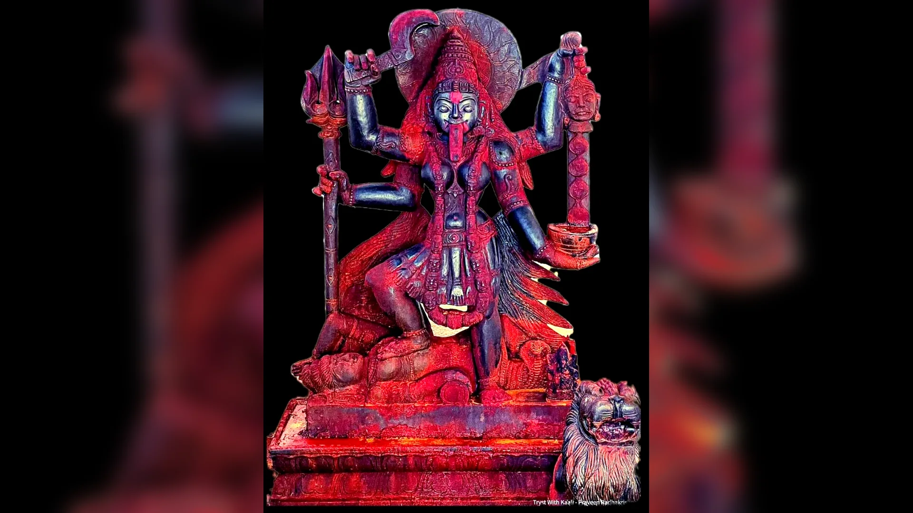

Frontispiece · Sri Kalabhairava1,000 names · Kalabhairava Sahasranama
Kālabhairava Sahasranāma
A free devotional reference for the Kalabhairava Sahasranama: 1,000 names of Sri Kalabhairava with English one-line meanings and longer explanations for chanting, study, and spiritual reflection.
Open the bookTheme demo — the first set of eleven, with the site's own names and meanings.
About this demo
What is real here: the eleven names, their Devanagari, IAST, meanings and elaborations come from bhairavakalikenamosthute.com, and every name links back to its page there.
What is a demo: the page is the approved Pothi system with the Kalabhairava theme file. Only the first set of eleven is loaded; the site has 1,000 names in 91 sets, and its own pages do not yet have a PDF edition or guide pages.
Why it looks like this: paper on a desk, one accent, the Devanagari as the object — the same system as the parent site, with only the theme tokens changed.